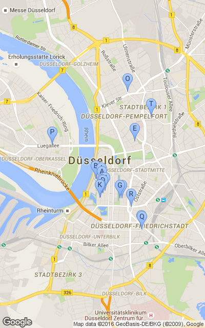

Alle
Angaben ohne Gewähr und Vollständigkeit. funkknecht@gmail.com V0.3
Diese Seite ist nur temprorär gespeichert und wird gelöscht werden !
Infos über Freifunk unter freifunk-rheinland.net
| # | Entfernung | Name | Strasse | PLZ Ort | Gateway | Navigation |
| A | 0 km | Carlsplatz | Carlsplatz 3 | 40213 Düsseldorf | GOTO | |
| B | 0 km | FF-DUS-DUS-Piratenpartei1 | Akademiestraße 1 | 40213 Düsseldorf | GOTO | |
| C | 0 km | SARAR-SHOP | Huschbergerstraße 10 | 40212 Düsseldorf | GOTO | |
| D | 0 km | ff-ddorf-bastionstrasse1 | Bastionstraße 4 | 40213 Düsseldorf | GOTO | |
| E | 0 km | FF-D-Mozartstrasse01 | Mozartstraße 14 | 40479 Düsseldorf | GOTO | |
| F | 0 km | ff-ddorf-bastionstrasse3 | Bilker Straße 22 | 40213 Düsseldorf | GOTO | |
| G | 0 km | Sarar_Cafe | Königsallee 86 | 40212 Düsseldorf | GOTO | |
| H | 0 km | publicplan_1og | Bilker Straße 29 | 40213 Düsseldorf | GOTO | |
| I | 0 km | Altstadt-1 | Wallstraße 9 | 40213 Düsseldorf | GOTO | |
| J | 0 km | ff-ddorf-hohestrasse1 | Hohe Straße 14 | 40213 Düsseldorf | GOTO | |
| K | 0 km | publicplan_2og | Bilker Straße 29 | 40213 Düsseldorf | GOTO | |
| L | 0 km | FF-DUS-DUS-Piratenpartei2 | Akademiestraße 7 | 40213 Düsseldorf | GOTO | |
| M | 0 km | ff-ddorf-bastionstrasse2 | Bilker Straße 22 | 40213 Düsseldorf | GOTO | |
| N | 0 km | ff-ddorf-hohestrasse2 | Hohe Straße 14 | 40213 Düsseldorf | GOTO | |
| O | 1 km | FF-D-Ross3 | Roßstraße 9 | 40476 Düsseldorf | GOTO | |
| P | 1 km | Freifunk_Oberkassel | Oberkasseler Straße 84 | 40545 Düsseldorf | GOTO | |
| Q | 1 km | freifunk_fuerstenplatz | Helmholtzstraße 40 | 40215 Düsseldorf | GOTO | |
| R | 1 km | zITaUnDbOdO | Graf-Adolf-Straße 39 | 40210 Düsseldorf | GOTO | |
| S | 1 km | helmholtz-53 | Helmholtzstraße 53 | 40215 Düsseldorf | GOTO | |
| T | 1 km | carrotcake-vorne | Moltkestraße 75 | 40479 Düsseldorf | GOTO | |
|  | ||||||
|
|
Alle
Angaben ohne Gewähr und Vollständigkeit. funkknecht@gmail.com V0.3
Diese Seite ist nur temprorär gespeichert und wird gelöscht werden !
Infos über Freifunk unter freifunk-rheinland.net
|
|||||